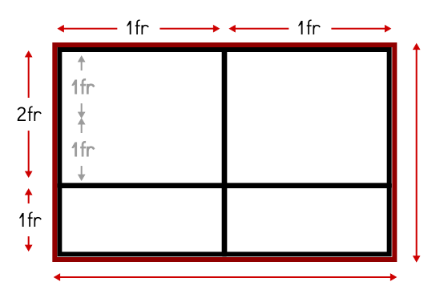
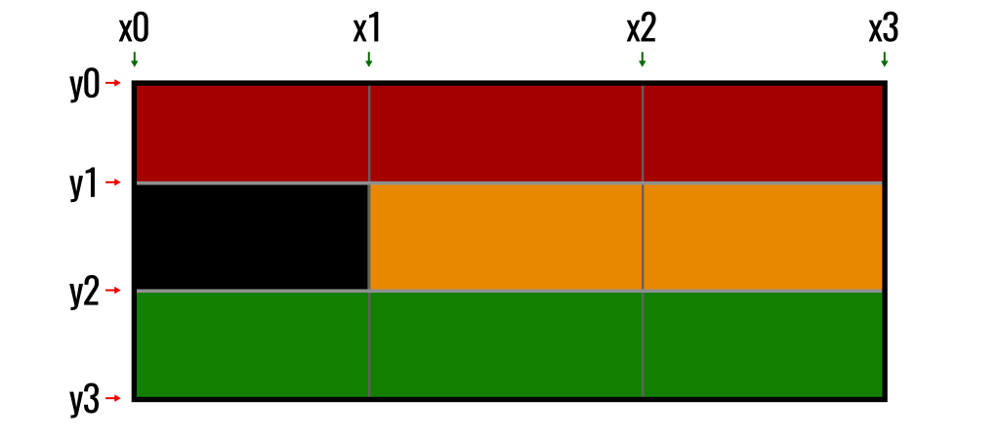

Grid
Para utilizar Grid CSS necesitaremos tener en cuenta una serie de conceptos que utilizaremos a partir de ahora y que definiremos a continuación:

- Contenedor: El elemento padre contenedor que definirá la cuadrícula o rejilla.
- Ítem: Cada uno de los hijos que contiene la cuadrícula (elemento contenedor).
- Celda (grid cell): Cada uno de los cuadritos (unidad mínima) de la cuadrícula.
- Area (grid area): Región o conjunto de celdas de la cuadrícula.
- Banda (grid track): Banda horizontal o vertical de celdas de la cuadrícula.
- Línea (grid line): Separador horizontal o vertical de las celdas de la cuadrícula.
Para utilizar cuadriculas Grid CSS, trabajaremos bajo el siguiente escenario:
<div class="grid"> <!-- contenedor -->
<div class="a">Item 1</div> <!-- cada uno de los ítems del grid -->
<div class="b">Item 2</div>
<div class="c">Item 3</div>
<div class="d">Item 4</div>
</div>
Para activar la cuadrícula grid hay que utilizar sobre el elemento contenedor la propiedad display y especificar el valor grid o inline-grid. Este valor influye en como se comportará la cuadrícula con el contenido exterior. El primero de ellos permite que la cuadrícula aparezca encima/debajo del contenido exterior (en bloque) y el segundo de ellos permite que la cuadrícula aparezca a la izquierda/derecha (en línea) del contenido exterior.
Una vez elegido uno de estos dos valores, y establecida la propiedad display al elemento contenedor, hay varias formas de configurar nuestra cuadrícula grid. Comencemos con las propiedades que se aplican al elemento contenedor (padre).
Grid con filas y columnas
Es posible crear cuadrículas con un tamaño explícito. Para ello, sólo tenemos que usar las propiedades CSS grid-template-columns y grid-template-rows, que sirven para indicar las dimensiones de cada celda de la cuadrícula, diferenciando entre columnas y filas. Las propiedades son las siguientes:
| Propiedad | Valor | Descripción |
| grid-template-columns | [c1] [c2] ... | Establece el size de cada columna (col 1, col 2...). |
| grid-template-rows | [f1] [f2] ... | Establece el size de cada fila (fila 1, fila 2...). |
Conociendo estas dos propiedades, asumamos el siguiente código CSS:
.grid {
display: grid;
grid-template-columns: 50px 300px;
grid-template-rows: 200px 75px;
}
Esto significa que tendremos una cuadricula con 2 columnas (la primera con 50px de ancho y la segunda con 300px de ancho) y con 2 filas (la primera con 200px de alto y la segunda con 75px de alto). Ahora, dependiendo del número de ítems (elementos hijos) que tenga el contenedor grid, tendremos una cuadrícula de 2x2 elementos (4 ítems), 2x3 elementos (6 ítems), 2x4 elementos (8 ítems) y así sucesivamente. Si el número de ítems es impar, la última celda de la cuadrícula se quedará vacía.

Unidad fracción restante (fr)
En el ejemplo anterior he utilizado píxels como unidades de las celdas de la cuadrícula, sin embargo, también podemos utilizar otras unidades (o incluso combinarlas) como porcentajes, la palabra clave auto (que obtiene el tamaño restante) o la unidad especial de Grid CSS fr (fraction), que simboliza una fracción de espacio restante en el grid. Veamos un código de ejemplo en acción:
.grid {
display: grid;
grid-template-columns: 1fr 1fr;
grid-template-rows: 2fr 1fr;
}
Este nuevo ejemplo, se crea una cuadrícula de 2x2, donde el tamaño de ancho de la cuadrícula se divide en dos columnas (mismo tamaño de ancho para cada una), y el tamaño de alto de la cuadrícula se divide en dos filas, donde la primera ocupará el doble (2 fr) que la segunda (1 fr):
De esta forma, podemos tener un mejor control del espacio restante de la cuadrícula, y como utilizarlo.
Nota: Se pueden combinar varias unidades diferentes, pudiendo utilizar píxeles (px) y fracciones restantes (fr), porcentajes (%) y fracciones restantes (fr) o combinaciónes similares.
Filas y columnas repetitivas
En algunos casos, en las propiedades grid-template-columns y grid-template-rows podemos necesitar indicar las mismas cantidades un número alto de veces, resultando repetitivo y molesto. Se puede utilizar la expresión repeat() para indicar repetición de valores, indicando el número de veces que se repiten y el tamaño en cuestión.
La expresión a utilizar sería la siguiente: repeat([núm de veces], [valor o valores]):
.grid {
display: grid;
grid-template-columns: 100px repeat(2, 50px) 200px;
grid-template-rows: repeat(2, 50px 100px);
}
Asumiendo que tuvieramos un contenedor grid con 8 ítems hijos (o más), el ejemplo anterior crearía una cuadrícula con 4 columnas (la primera de 100px de ancho, la segunda y tercera de 50px de ancho y la cuarta de 200px de ancho). Por otro lado, tendría 2 filas (la primera de 50px de alto, y la segunda de 100px de alto). En el caso de tener más ítems hijos, el patrón se seguiría repitiendo.
El ejemplo anterior sería equivalente al código CSS siguiente:
.grid {
display: grid;
grid-template-columns: 100px 50px 50px 200px;
grid-template-rows: 50px 100px 50px 100px;;
}
Grid con líneas nombradas
Con Grid CSS también tenemos la posibilidad de usar «linenames», o lo que es lo mismo, ponerle nombre a las líneas de nuestro sistema grid. Vamos a verlo con un ejemplo, donde probablemente se vea mucho mejor. Partamos de esta estructura HTML:
<div class="grid">
<div class="header">Header</div>
<div class="sidebar">Sidebar</div>
<div class="content">Content</div>
<div class="footer">Footer</div>
</div>
Los nombres de las clases ya dan una idea del contenido que tendrán. Ahora, mediante Grid CSS lo que haremos es darle una estructura definida. Para ello, vamos a considerar los siguientes nombres para las lineas de nuestro grid, utilizando X para las posiciones en el eje X y utilizando Y para las posiciones en el eje Y:
Teniendo esto en cuenta, lo único que tenemos que hacer es indicar estos nombres entre corchetes, justo antes de la medida que establecimos como vimos en apartados anteriores. Obsérvese que también se coloca una nombre de línea final sin medida a continuación, que representa la línea final:
.grid {
display: grid;
grid-template-columns: [x0] 1fr [x1] 1fr [x2] 1fr [x3];
grid-template-rows: [y0] 1fr [y1] 1fr [y2] 1fr [y3];
}
En este caso, los nombres utilizados son tan sólo un ejemplo didáctico. Si se considera más adecuado, se podrían utilizar otros nombres quizás más amigables como top-line, top-medium-line, bottom-medium-line y bottom-line, por ejemplo, en lugar de y0, y1, y2 y y3 respectivamente.
Ahora, teniendo los nombres, sólo quedaría delimitar que zonas del grid queremos que ocupe cada uno de nuestros bloques
.header {
background: darkred;
grid-column-start: x0;
grid-column-end: x3;
/* Equivalente a */
grid-column: x0 / x3;
}
.sidebar {
background: black;
grid-row: y1 / y2;
color: white;
}
.content {
background: orange;
grid-column: x1 / x3;
grid-row: y1 / y3;
}
.footer {
background: green;
grid-column: x0 / x3;
grid-row: y2;
}
Hemos aplicado la siguiente estructura:
- Zona .header desde la columna x0 a x3.
- Zona .sidebar desde la fila y1 a y2.
- Zona .content desde la columna x1 a x3 y desde la fila y1 a y3.
- Zona .footer desde la columna x0 a x3 en la fila y2.
Por lo que nuestra estructura grid quedaría así:
Grid por áreas
Mediante los grids CSS es posible indicar el nombre y posición concreta de cada área de una cuadrícula. Para ello utilizaremos la propiedad grid-template-areas, donde debemos especificar el orden de las áreas en la cuadrícula. Posteriormente, en cada ítem hijo, utilizamos la propiedad grid-area para indicar el nombre del área del que se trata:
| Propiedad | Descripción |
| grid-template-areas | Indica la disposición de las áreas en el grid. Cada texto entre comillas simboliza una fila. |
| grid-area | Indica el nombre del área. Se usa sobre ítems hijos del grid. |
De esta forma, es muy sencillo crear una cuadrícula altamente personalizada en apenas unas cuantas líneas de CSS, con mucha flexibilidad en la disposición y posición de cada área:
.grid {
display: grid;
grid-template-areas: "head head"
"menu main"
"foot foot";
}
.a { grid-area: head; background: blue }
.b { grid-area: menu; background: red }
.c { grid-area: main; background: green }
.d { grid-area: foot; background: orange }
Aplicando este código, conseguiríamos una cuadrícula donde:
- El Item 1, la cabecera (head), ocuparía toda la parte superior.
- El Item 2, el menú (menu), ocuparía el área izquierda del grid, debajo de la cabecera.
- El Item 3, el contenido (main), ocuparía el área derecha del grid, debajo de la cabecera.
- El Item 4, el pie de cuadrícula (foot), ocuparía toda la zona inferior del grid.

OJO: Ten en cuenta añadir contenido de texto en cada celda del grid, para que Grid CSS detecte que esa celda no está vacía.
En la propiedad grid-template-areas, en lugar de indicar el nombre del área a colocar, también podemos indicar una palabra clave especial:
- La palabra clave none: Indica que no se colocará ninguna celda en esta posición.
- Uno o más puntos (.): Indica que se colocará una celda vacía en esta posición.
Ajuste automático de celdas
Es posible utilizar las propiedades grid-auto-columns y grid-auto-rows para darle un tamaño automático a las celdas de la cuadrícula. Para ello, sólo hay que especificar el tamaño deseado en cada una de las propiedades. Además, también podemos utilizar grid-auto-flow para indicar el flujo de elementos en la cuadrícula, y especificar por donde se irán añadiendo.Las propiedades son las siguientes:
| Propiedad | Valores | Descripción |
| grid-auto-columns | size | Indica el tamaño automático de ancho que tendrán las columnas. |
| grid-auto-rows | size | Indica el tamaño automático de alto que tendrán las filas. |
| grid-auto-flow | row | column | dense | Utiliza un algoritmo de autocolocación (intenta rellenar huecos). |
Un ejemplo de como se insertarían los elementos en una cuadrícula de 2x2 utilizando grid-auto-flow por columnas o por filas:
Propiedades para ítems hijos
Hasta ahora, salvo algunas excepciones como justify-self, align-self o grid-area, hemos visto propiedades CSS que se aplican solamente al contenedor padre de una cuadrícula. A continuación, vamos a ver ciertas propiedades que en su lugar, se aplican a cada ítem hijo de la cuadrícula, para alterar o cambiar el comportamiento específico de dicho elemento, que no se comporta como la mayoría.
Algunas de las propiedades vistas hasta ahora son las siguientes:
| Propiedad | Descripción |
| justify-self | Altera la justificación del ítem hijo en el eje horizontal. |
| align-self | Altera la alineación del ítem hijo en el eje vertical. |
| grid-area | Indica un nombre al área especificada, para su utilización con grid-template-areas. |
Sin embargo, existen algunas propiedades más, referentes en este caso, a la posición de los hijos de la cuadrícula donde va a comenzar o terminar una fila o columna. Las propiedades son las siguientes:
| Propiedad | Descripción |
| grid-column-start | Indica en que columna empezará el ítem de la cuadrícula. |
| grid-column-end | Indica en que columna terminará el ítem de la cuadrícula. |
| grid-row-start | Indica en que fila empezará el ítem de la cuadrícula. |
| grid-row-end | Indica en que fila terminará el ítem de la cuadrícula. |
Con dichas propiedades, podemos indicar el siguiente código CSS sobre el primer ítem de una cuadrícula de 4 ítems:
.grid {
display:grid;
}
.a {
grid-column-start: 1;
grid-row-end: 2;
}
De esta forma, tenemos una cuadrícula de 4 elementos, en el que indicamos la posición del ítem 1 (elemento con clase .a): comenzando en la columna 1 y acabando en el inicio de la columna 2:

Ese sería el funcionamiento normal. Donde se ve la utilidad de estas propiedades, es si variamos los valores de forma que tomen posiciones diferentes, como por ejemplo, si indicamos que el ítem 1 debe comenzar en la columna 1, pero acabar en la columna 3 (ocupando la hipotética primera y segunda celda):

En este nuevo ejemplo, comenzamos el primer ítem en la columna 2 y lo acabamos al principio de la columna 3, por lo que la celda permanecerá en la posición de la segunda columna. Además, añadimos la propiedad grid-row-start que hace lo mismo que hasta ahora, pero con las filas. En este caso, le indicamos que comience en la fila 3, por lo que el ítem 1 se desplaza a una nueva fila de la cuadrícula, dejando en la anterior el ítem 4:

También es posible utilizar la palabra clave span seguida de un número, que indica que abarque hasta esa columna o celda.